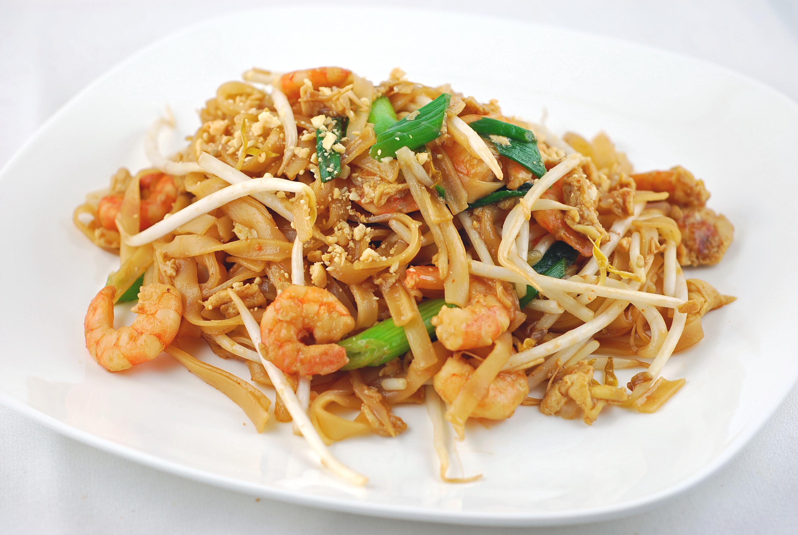
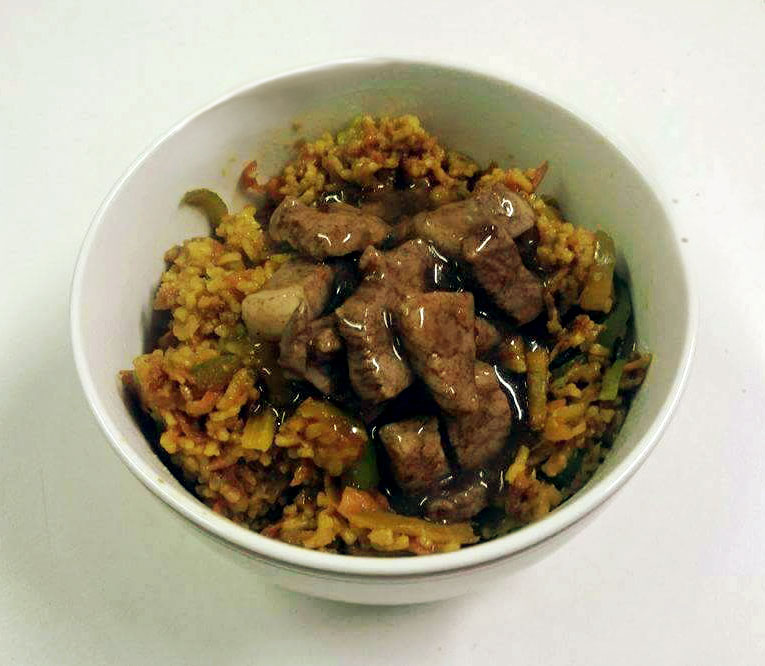
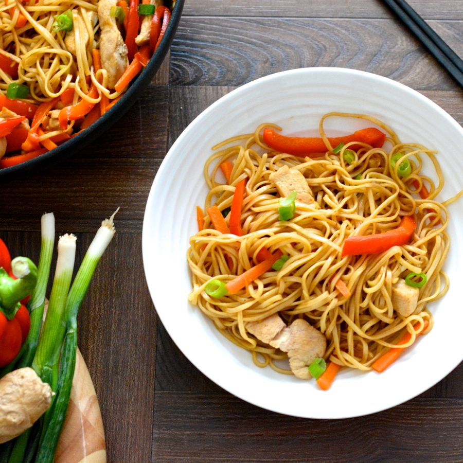

Main Meals
Pad Thai
Pad Thai is an Asian dish with stir-fry noodles that is great as a fast food alternative satisfying the cravenings for a takeout but at a better price
Serves : 2
Preperation Time : 20-25 mins
Cooking Time : 8-12 mins

-
Ingredients
- 115g (4oz) thick rice noodles
- 1 tbsp vegetable oil
- 2 spring onions roughly chopped with extra to garnish
- 1 garlic clove crushed
- 1 fresh red chilli deseeded and thinly sliced
- 115g (4oz) pork fillet trimmed and thinly sliced
- 60g (2oz) cooked, peeled prawns, alternatively a similar mass of chesnut mushrooms works well
- Juice of 1/2 lime or a few splashes of lemon juice
- 1 tbsp of Thai fish sauce
- 1 egg beaten
- 25g (1oz) beansprouts
- Handful of chopped fresh coriander
- 25g (1oz) of unsalted peanuts, chopped
-
Equipment
- Medium Sauce pan
- Wok or large/meduim frying pan
- A spatula (two works well when trying to mix the dish)
- A cup or container to beat the egg
- A fork to beat the egg
- A sharp knife
- A vegetable chopping board and meat board
- A tablespoon
-
Method
- Prepare the noodles according to the packet instructions. Drain and set aside.
- Heat a wok or large frying pan over a medium-high heat, then add the oil. Add the spring onions, garlic and chillies and stir-fry for 1-2 minutes, until cooked through.
- Add the prawns, lime juice, fish sauce and eggs and stir-fry over a meduim heat for 2-3 minutes, until the eggs have set and the prawns are tender. If you are using mushrooms instead make sure they have been cooked through (became smaller and glossier before continuing).
- Add the beansprouts, coriander, peanuts (a spoonful of peanut butter is a good alternative but make sure to mix well) and noodles and stir-fry for 30 seconds, until heated through. Garnish with spring onions and serve immediately.
Chinese Vegetable Rice and Honeyed Pork
Chinese Vegetable rice is a very healthy budget busting meal in its own right but when the honeyed pork has been added it truly comes into its own.
Serves : 4
Preperation Time : 30 mins
Cooking Time : 25 mins

-
Ingredients
-
Chinese Vegetable rice
- 350g (12oz) long-grain rice
- 1 tsp ground turmeric
- 2 tbsp of vegetable oil
- 225g (8oz) courgettes
- 1 red pepper deseeded and sliced
- 1 green pepper deseeded and sliced
- 1 fresh green chilli, deseeded and finely chopped
- 1 carrot, coarsely grated
- 150g (5 1/2oz) beansprouts
- 6 spring onions
- 2 tbsp of dark soy sauce
- Salt
- Fresh coriander leaves to garnish
-
Honeyed pork
- 420g (15oz) pork fillet trimmed and sliced into medallions or size
- 1 tbsp soy sauce
- 1 tbsp Chinese five-spice
- 2 tbsp honey
- 1 tbsp cornflour
- 1 tbsp vegetable oil
-
Equipment
- 2 large frying pans or woks
- Medium saucepan
- Spatula (would recommend multiple spatulas as it is easier to mix the rice)
- Knife
- Sieve (to drain the rice)
- Chopping boards for both vegetables and meat
-
Method
- Place the rice and turmeric in a saucepan of lightly salted water and bring to the boil. Reduce the heat and leave to simmer for 8-10 minutes, or until the rice is just tender. Drain the rice throughly and dry any excess water off. Set aside.
- Heat the wok/ frying pan over a medium high heat, then add the oil. Add the courgettes to the wok and stir-fry for about 2 minutes. Add the peppers and chilli and stir-fry for 2-3 minutes.
- Stir the cooked rice into the wok, a little at a time, tossing well after each addition. Add the carrot, beansprouts and spring onions to the wok and stir-fry for a further 2 minutes.
- Drizzle over the soy sauce and stir well. Transfer to serving bowls and scatter the coriander leaves. Serve immediatly with the pork by its side.
- While in the process of making the rice also mix the pork, soy sauce and five-spice and leave to marinate for 5 minutes.
- Heat a large frying pan over a high heat and add the the oil. Fry the pork for 2-3 minutes on each side until cooked through.
- Pour in 150ml water with the honey and bubble for 2 minutes. Mix the cornflour with a little water, stir into the sauce and cook until it thickens and is glossy.
Chicken Chow Mein
Chicken Chow Mein is a great quick reasonably healthy dish and heats up very well the next day!
Serves : 2
Preperation Time : 15 mins
Cooking Time : 15-18 mins

-
Ingredients
- 100g (3 1/2oz) noodles
- 2 tbsp vegetable oil
- 300g (10 1/2oz) chicken breasts cut into strips
- 1 courgette, thinly sliced
- 1 carrot, thinly sliced
- 1 red pepper, deseeded and thinly sliced
- 50g (1 3/4oz) mangetout or petit pous
- 4 large spring onions, thinly sliced
- 2 tsp Chinese five-spice
- 1 tbsp light soy sauce
- 1 tbsp oyster sauce
- 3-4 tbsp chicken stock
-
Equipment
- Large frying pan
- Medium saucepan
- Spatula(s)
- Knife
- Chopping boards for both vegetables and meat
-
Method
- Cook the noodles in the saucepan for 2-3 minutes or according to the packet instructions, until just tender but with still some bite.
- Heat the oil in the large frying pan or wok and stir-fry the chicken with the courgete, carrot, red pepper, mangetout and spring onions over a high heat for 5 minutes, until the chicken is cooked through and the vegetables are tender.
- Add the Chinese five-spice, soy sauce, oyster sauce and stock and stir for a further minute. If you don't have oyster sauce, don't use the light soy sauce and instead use 2 tbsp of dark soy sauce. Drain the noodles, add to the pan and stir again for 1 minute before serving.